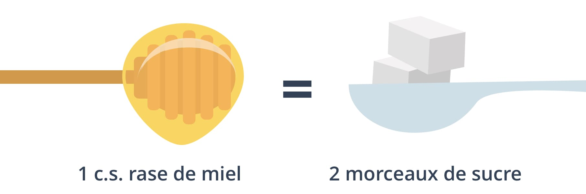

La fabrication du miel par les abeilles est un des grands miracles de la nature : pour produire 500 grammes de miel, les abeilles doivent butiner 8 millions de fleurs. Ces dernières années, la consommation de miel a explosé et le miel est même devenu un argument marketing à la mode. Mais mérite-t-il vraiment sa réputation ? Quels sont ses bienfaits et comment être sûr de choisir un miel de qualité ? Avec l’aide du nutritionniste Anthony Berthou de La santé par la nutrition, on vous livre tout sur le précieux liquide doré.
Le miel, une bonne alternative au sucre de table
Contrairement au sucre de table, le miel est un produit pur qui ne subit pas de transformation. Pour produire le miel, les abeilles butinent le nectar des fleurs puis se le transmettent d’abeille en abeille à l’intérieur de la ruche. Le nectar est alors peu à peu “digéré” et enrichi par les enzymes que chacune d’entre elles sécrète. Grâce à ce processus, le miel est riche en minéraux (magnésium, calcium, potassium, fer) et en vitamines (B et C), même si les quantités restent faibles. À l’inverse, le sucre de table subit un processus de raffinage qui détruit tous ses nutriments.

Les remèdes de grand-mère conseillent d’ajouter du miel à son infusion pour guérir à peu près tous les maux … et nos mamies ont loin d’avoir tort ! Le miel est un puissant antiseptique qui va ralentir la prolifération des bactéries. Une cuillère de miel quotidienne en période de maladie peut aider à se débarrasser d’un vilain rhume. Il va aussi apaiser les irritations et toux en déposant une paroi protectrice dans la gorge. Mention spéciale pour le miel de manuka, dont les vertus uniques permettent de l’élever au rang de “super aliment”, qu’on utilise même en médecine pour ses vertus cicatrisantes.
Le miel est également moins calorique que le sucre de table et il possède un pouvoir sucrant 30% à 40% supérieur au sucre de table : on peut ainsi se permettre d’en mettre moins. Enfin, le miel est aussi connu pour sa teneurs en antioxydants, des molécules qui aident à prévenir le cancer et les maladies dégénératives. Plus le miel est foncé (comme le miel de sarrasin ou le miel de châtaignier), plus il est riche en antioxydants ! Cependant, le pouvoir antioxydant de la plupart des miels reste relativement faible par rapport à celui des fruits et légumes.
Le miel, c’est 80% de sucre
Si l’on confère toutes ces vertus au miel, il ne faut pas oublier que dans 100 grammes de miel, il y a au moins 80 grammes de sucre ! Tous les miels ne se valent pas, car leur composition dépend de l’origine du miel et des fleurs butinées par les abeilles. Mais, en moyenne, une cuillère à café de miel (8g de sucre) représente 30% de la consommation journalière maximale recommandée par l’OMS.

Selon son origine, le miel est composé d’environ 55% de fructose, un sucre naturel qui est aussi celui que l’on trouve dans les fruits. Si le fructose peut sembler un bon argument en faveur du miel, il faut en réalité savoir que seul notre foie est capable de métaboliser le fructose (voir notre article sur le sucre), à l’inverse d’autres sucres comme le glucose qui peuvent être utilisés par le foie mais aussi par les muscles et le cerveau. Or, notre alimentation quotidienne contient déjà trop de fructose par rapport à la capacité de notre foie à le traiter. En effet, le fructose est ajouté dans de nombreux produits industriels (céréales, pizzas, gâteaux, sauces…). Lorsque le fructose est en excès dans notre organisme, il va alors être directement stocké dans le foie sous forme de graisses. Ce syndrome du “foie gras” augmente ainsi les risques de diabète et favorise la résistance à l’insuline.
Le miel ne résout pas non plus le problème de l’addiction au sucre. Tout comme le sucre de table, il active dans notre cerveau le circuit de récompense, qui va nous pousser à consommer à nouveau des produits sucrés.
Finalement, le miel vaut toujours mieux que le sucre, nutritionnellement comme gustativement … mais tout est dans la juste mesure ! On peut tout à fait intégrer le miel dans le cadre d’une alimentation équilibrée, mais on le fait avec modération et en surveillant ses apports globaux en sucres (et notamment en sucres cachés, que l’on trouve dans les produits transformés).
Comment bien choisir son miel ?
Les aliments naturels étant en vogue ces dernières années, le miel connaît un succès sans précédent : rien qu’en 5 ans, la demande mondiale a augmenté de 60% ! Malheureusement, cette demande colossale a eu pour conséquence d’ouvrir le marché à l’importation massive de miels trafiqués, qu’on appelle les miels frelatés. Le plus souvent, ces miels ont été dilués avec des sirops de sucre, du glucose commercial ou de l’eau. Selon des tests réalisés en 2015, près d’un tiers des miels vendus en Europe seraient frelatés, donc frauduleux ! Les pays asiatiques, l’Espagne et l’Ukraine sont malheureusement connus pour l’exportation de miels non réglementaires à bas prix.

Mais comment éviter ces miels frelatés ? Tout d’abord, il faut délaisser les produits comportant la mention “Mélange de miels UE et hors UE” dont la traçabilité est faible : ils ne garantissent pas que le miel respecte les critères européens qui imposent que l’appellation “Miel” ne s’applique que pour du miel pur. Le prix est également un bon indice pour détecter les miels frelatés : un miel trop bon marché (à moins de 10€ le kilo), devrait vous mettre la puce à l’oreille. Malheureusement, le gouvernement a refusé d’inscrire dans la loi sur l’alimentation (Egalim) l’étiquetage obligatoire du (ou des) pays d’origine du miel.
L’idéal est de consommer du miel produit en France. La législation française est plus stricte que les réglementations européennes, et garantit un produit très contrôlé.
Par ailleurs, il est essentiel de choisir un miel bio, pour votre santé comme pour la survie des abeilles ! En effet, les fleurs butinées pour produire le miel sont susceptibles d’être contaminées par les pesticides chimiques utilisés en agriculture. Ces pesticides vont à leur tour contaminer le miel et mettre en danger les abeilles. À l’achat, on privilégie un miel qui dispose du label bio français (Agriculture Biologique) et/ou européen (Eurofeuille), qui garantissent une production de miel sans traitement chimique et respectueuse de la faune et de la flore. Les labels Nature & Progrès et Demeter sont encore plus exigeants, notamment sur la qualité des lieux de butinage des abeilles (zones sauvages et biologiques).
Acheter respectueusement, c’est sauver les abeilles !
S’il existe autant de fraudes sur le marché, c’est malheureusement parce que l’offre de miel n’arrive plus à suivre la demande. La surexploitation des ruches, les maladies parasitaires, la destruction de la biodiversité ainsi que l’usage intensif d’insecticides sur les cultures sont les facteurs d’un déclin dramatique des abeilles. La France et la Belgique sont les deux pays européens où les abeilles meurent le plus, avec 30% de disparition des colonies chaque année. La production de miel est donc impactée : entre 1990 et aujourd’hui, la quantité de miel produit en France a diminué de 50%.

Par ailleurs, si on a la chance pouvoir profiter des vertus du miel, il est aussi bon de rappeler que le miel est la nourriture des abeilles, et qu’elles le produisent en vue de faire leurs provisions pour l’hiver ! En ne laissant aucun miel aux abeilles pendant la saison hivernale, certains apiculteurs déciment la colonie. Or, les abeilles sont indispensables à la survie de la majorité des fleurs et espèces végétales, et donc de la production de céréales, fruits, légumes, noix, épices, cacao, café, etc. Ainsi, c’est 35% de la production alimentaire mondiale que l’on doit aux abeilles et qui risque de disparaître avec elles.
Le miel est un produit extrêmement précieux qu’il est donc important d’acheter en connaissance de cause. Pour cela, on favorise une apiculture respectueuse des abeilles, de leur écosystème et de l’environnement. Il est même aujourd’hui possible de parrainer une ruche en France pour favoriser la prolifération locale des abeilles, par exemple grâce au mouvement Un Toit pour les abeilles, ou encore à L’Association Mécènes et Parrains d’Abeilles (AMPA) .

Je suis très attentif sur les commentaires et choix que vous nous conseillez.
Votre aide nous est très précieuse et me guide dans mes achats.
Aujourdhui il devient difficile de ne plus douter de la vraie qualité des produits vendus.
Tout le monde n’a pas la chance d’avoir un potager, même petit, c’est toujours ça de gagné.
Pour le reste ; il faut apporter beau d’attention et c’est là que vous nous apportez beaucoup.
Merci mille fois à toute votre équipe pour le merveilleux travail que vous faite pour nous.
Bravo encore.
Je ne mange du miel que je prend direct producteur
c’est r
le miel de manuka le meilleurs ,car celui ci et fait en nouvel zélande dans les forets sans pecticides il y en a pour tous les gouts mes trés chers,unefois gouté ce miel vous ne pourrais plus mangé du miel ordinnaire
Bonjour ou peut-on se procurer le miel de manufacture svp..
Bonjour ou peut-on se procurer le miel de manuka svp..
Bonjour
Merci pour cet article (encore un) très intéressant et synthétique
Mais je ne comprends pas la notion BIO dans le miel :comment peut on s’assurer que les abeilles butinent dans une zone déterminée ?
Merci pour votre réponse
Je n’achete Que du miel sur mon marché à l’apicûlteur de ma région ( Bretagne ) grand merci pour votre aide si précieuse . Je n’chete Rien sans vous .
Le miel de thym et le meilleur que j’ai goûté jusqu’à présent, grand amateur de miel depuis toujours.
Est-ce que le miel corse est plus vertueux que les autres miel si quelqu’un peut me donner une réponse objectif merci d’avance
Comment fait on pour expliquer aux abeilles comment butiner que bio
Baudrier… Si tes abeilles vivent dans un endroit sain ou les plantes ne sont pas traitées… Ben ton miel sera meilleur parce qu’il n’y aura pas de trucs bizarres dedans
Excellent votre article cela aide à bien consommer le miel que j’adore et que j’utilise des que je peux pas soigner aussi des mots souverain merci
Merci pour cette excellente information; intéressante mais pas trop compliquée. J’ai appris plein de choses sur le miel. C’est concret et directement utile.
Et merci pour votre investissement dans cette application, fort utile et qui peut potentiellement faire changer les produits que nous consommons quotidiennement.
En effet, l’industrie agro-alimentaire dépend de l’offre et la demande; nous pouvons les influencer!
Bien consommer n’est pas seulement meilleur pour notre organisme, c’ est un acte politique, et vous l’avez bien compris!!!
Bravo pour votre investissement dans ce travail. Oui ce serait bien d’avoir dans cet océan de miel, quelques marques ou noms de producteurs envers lesquels vous accordez le plus votre confiance.
Le miel améliore mon transit suite à une intervention chirurgicale du colon (diverticulose)
C’est vraiment instructif comme information et merci beaucoup
kl3kkekdkjekzkzhifofjfjf
bbxkwj
Merci pour ces explications claires
kekdjdjjdjdjjdgevdcjfvkrkrl
Merci pour cette précision sur le miel.
Ça serait cool de scanner et de savoir si le miel et bien ou non car les étiquettes ne sont pas très clair
Merci beaucoup pour ces renseignements, je vais en parler autour de moi.. Armelle
Je ne puis qu’être plus qu’etonne de vous lire ! et d’aplaudir des entreprises comme la vôtre !
Bravo ! Continuez Côme cela !
Bonjour,
Je pense qu’il faut réellement mettre en avant le fait que le miel soit produit et travaillé par l’apiculteur, et bannir ceux qui collectent les miels pour ensuite les mélanger et les travailler.
On sait que le fait de mélanger les laits de France augmentent le risque d’intolérance. Le miel risque de ne pas échapper à la règle, c’est un trésor de bien fait, mais il ne faut pas faire n’importe quoi. Le sucre ajouté ou tout autre artifice est un ennemi, il est possible de soigner les plaies cutanée même.
Le sucre de betterave est lui aussi dénaturer donc il ne peut pas apporter de mieux au miel.
Bonne journée
J’aime utiliser le miel pour sucrer mon thé bio c’est excellent au goût et pour le bien être de la journée
Est-ce que le miel corse est plus vertueux que les autres miel si quelqu’un peut me donner une réponse objectif merci d’avance
Bonjour
Quand je teste les miels, il m’est indiqué « inconnu », donc on ne sait pas quoi choisir.
Très bon compte-rendu de vos recherches bien adaptées à nos préoccupations. Merci à Blomy
L’exce Est la règle chez Blomy…mille merci.Gilles
Que pensez vous de la certification fairtrade car le miel choisi a été qualifié de médiocre pourtant pour moi ce label inspirait confiance
Merci d avance pour votre reponse
Felicitations pour cet article très intéressant! Je consomme du miel tous les jours (chataignier,manuka)et bio de prefernce mais je suis septique quant à la denomination’bio’pour du miel?!.Si les abeilles butinent près d’un champ bourré d’insecticides…….J’achete toujours des miels français!!
Bonjour.Comptez-vous faire une classification des miels ? En ce qui concerne l’achat,vous avez raison,bio et local,c’est le top,même ci celui-ci est bien plus cher.Acheter ce miel,c’est protéger notre environnement,nos abeilles et nos a
Apiculteurs.Petite précision,le miel ne doit pas être chauffé lors de l’extraction.
Le miel et gelée royale bio « Lune de miel » est qualifié médiocre à cause du manque de traçabilité de la provenance du produit (hors UE) .Il n’est pas mis en pot par l’apiculteur .Comment avez vous pu dans ces conditions certifier qu’il s’agit d’un miel bio ? En outre ce miel bio (avec gelée royale) est très (trop?) liquide comparé au même produit de l’une de miel non bio. Merci de votre réponse
Merci pour tout à l’équipe de blomy!
Serait-il possible de nous communiquer également les références d’un miel que vous recommandez?
Ou est-ce que vous évitez au risque de faire de la publicité aux uns et pas aux autres?
Mes meilleurs vœux de santé de bonheur et de succès à toute l’équipe de Blomy 🙂
Amitiés,
Yasmine
Excellent complément à ma recherche sur l’avis d’un miel acheté chez Lidl qui se trouve être médiocre.
Habituellement j’achete du miel d’apiculteur local. Ils ont du mal à commercialiser leur production et sont mal organisés pour le produire.
Ce n’est actuellement pas la saison et pourtant il y a une forte demande.
Pouvez vous dans votre étude évoquer cette production locale qui reste sous terrainne économiquement mais vivace
Miel de blomy et miel d’acacia
Le miel de forêt des Landes de Gascogne n’est pas bio mais à la lecture de l´etiquette il est récolté et conditionné dans les Pyrénées Atlantique (donc en France)
Bonjour,
Votre article est excellent pour notre consommation. Il nous rappelle bien à l’ordre sur l’importance des abeilles dans notre environnement, de leurs utilités dans nos vies et ce que l’on perdrait si elles venaient à disparaître.
Les gens ne se rendent pas compte et ce message devrait faire parti d’une campagne publicitaire a diffusée très largement à la télévision afin d’alerter un maximum de personne.
Merci bien à vous
Je suis appiculteur
Bonjour.
Peut on mélanger le miel avec du beurre sur une tartine, mes petits enfants en raffole maisj’ai entendu dire que ce n’est pas trop bon. Merci.
Très très instructif …
Merci pour tous ces précieux conseils….
Merci excellent
Super intéressant Merci
Où trouver du miel de Cuba ? C’est paraît-il le plus pur.
les magasins SUPER U bloquent votre application, comme par exemple sur le mile, mais sur d’autres aussi
Bonjour, je recommande fortement d’ajouter des liens contenant les références scientifiques que vous mentionnez. Cela rendra le site Web impartial et non une question de foi…
Par exemple: « Selon des tests réalisés en 2015, près d’un tiers des miels vendus en Europe seraient frelatés, donc frauduleux ! Les pays asiatiques, l’Espagne et l’Ukraine sont malheureusement connus pour l’exportation de miels non réglementaires à bas prix. »
Merci
A 200% d’accord !!!
J utilise le miel avec 1 goutte d huilr essentielle de lavande sur une cicatrice douloureuse : bienfait immediat et guerison la ou les medecins n arrivaie a rien
C’est très intéressant – Merci
Bonjour
Il y a un texte de loi français qui définit le miel de la manière suivante :
Produit de la récolte des abeilles obtenue sur des organismes vivants (végétaux ou animaux) extrait et conditionné sans chauffage. (abrégé)
C’est la définition légale du miel et tout sous-produit n’y correspondant pas se doit d’être vendu sous une autre appellation telle que miel de pâtisserie ou miel fantaisie ou industriel si tant est que ses vocables soient encore acceptés.
En conséquence tous les produits ne correspondant pas à cette définition ne devraient pas avoir leur place sur les rayons des magasins y compris les prétendument BIO car il est impossible de pouvoir garantir quoi que ce soit en la matière. Votre conseil de se tourner vers ce type de produit est malheureusement un abus et les organismes de certification ne devraient en aucun cas s’occuper de ce type de produit mais simplement s’ingénier à se référer à la loi.
très bon article sur le Miel. Moi j’en consomme depuis plus de 20 ans, mais avec votre article je me rend compte que j’en abuse un peu. Par contre j’achète mon miel localement chez l’apiculteur. Merci de nous rappeler l’importance des abeilles.
Super je vais faire attention mon dernier achat de miel est bio
allons donc le miel Francais est le meilleur ? avec tous les pesticides dans nos sols nous sommes champions d europe en la matiere et les rejets d usines nucleaires les abeilles ne connaissent pas ?
le meilleur miel au monde se trouve en nouvelle zelande, a cuba car pas de pesticides, en patagonie et en europe en hongrie ceci etant dit des petits producteurs dans les landes dans les alpes dans les pyrenees sont OK mais pas necessire d avoir un logo Bio qui coutent une fortune pour ces petits exploitants
Bien vu… j’ai également relevé le paradoxe dans le texte.
Comment peut-on avoir le meilleur miel au Monde en sachant les milliers de tonnes de pesticides déversés dans nos campagnes par les Agriculteurs ?
A ce qu’il parait le miel récolté en plein Paris sur les toits de l’opéra serait d’excellente qualité…
Mais nous ne sommes pas a un paradoxe près…
cdlt
Bonjour je suis apiculteur dans les Pyrénées en haute montagne de 1200m à plus de 2080m. Je vous propose un miel de ruche Warré avec des abeille noire locale.
Merci blomy pour votre application
http://www.miel-andorre.fr/
Bonjour,
Tout à fait d’accord avec vous.
J’achète mon miel auprès d’un petit apiculteur local des hautes Pyrénées qui récolte et met en pot son miel.
Super miel !
Les pots comportent la date de consommation (de préférence), toutes les coordonnées de l’agriculteur avec son adresse et numéro de téléphone, numero de lot. Miel non trafiqué sans ajout d’eau (test du buvard) et cristallise se!on les miels à partir de 10 à 18 mois.
Merci encore à Blomy
Apiculteur et non agriculteur !
Bjr j’ai été faire un petit tour sur votte site . Pr un bebe de 13 mois quel miel prendre ? Je lui mets 1 cuillère dans son biberon de lait chaque matin . Et au passage avez vous un code promo ? En tous cas superbe travail 😉 . Bonne journée
Il ne faut pas donner de miel à un bébé. Voyez avec votre médecin.
Malheureusement vous préparez votre bébé à l’habitude de consommation de sucre, même avec un miel de qualité gare à l’obésité !!!
Bonjour, merci à Yuca ( que mes enfants m’ont fait découvrir) et donc je ne me passe pas! Je scanne tout, ça prend du temps… En ce qui concerne le miel, je l’achète directement chez un producteur à Sault ( Vaucluse) le miel de lavandes…
9a m’intéresse…qu’elle adresse ?
Bonjour. Je recherche du miel de lavande clair. Pourriez-vous me dire si vous accepteriez de me faire un envoi et si oui à quel tarif ? Merci d’avance. Cordialement
Bonjour,
J’achète régulièrement depuis plusieurs années du miel d’oranger bio récolté en Sicile (nom et adresse du producteur indiqué sur l’étiquette) dans un magasin bio. Ce produit n’est pas vendu en grosses quantités car ce n’est pas une production intensive. Pourtant, quand je scanne mon produit, votre site me dit qu’il est médiocre. Qui dois-je croire ?
Merci pour votre réponse.
oui le miel est extraordinaire pour la plus grande partie d`entre nous, pourtant je fais partie des exceptions mais elles existent car dès que je consomme du miel j`ai des brûlures d`estomac depuis toute jeune je ne peux donc en aucun cas profiter des bienfaits de ne nectar
Bonjour,
J’ai eu un problème semblable et Je vous conseille de persévérer. Le miel étant « acide » peut titiller votre estomac peut être irrité. Mais il est aussi cicatrisant et peut calmer cette irritation.
ma question est la même que Lecouëdic
Article très intéressant. Mais comment avoir la certitude que les abeilles vont butiner uniquement des zones « bio » non traitées ? Merci. 😉
Très bon article Julie.
Je suis apiculteur depuis 15 ans, et l’information est globalement juste.
Un miel peut contenir jusqu’à 6 types de sucre différents, du à la diversité des fleurs butinées. La diversité des sucres évite l’aspect négatif que peut apporter un seul sucre. Il contient 18% d’eau, et 2% d’éléments très bénéfique à notre santé. Au contact de l’air le miel produit de l’eau oxygénée, ce qui en fait un anti-septique naturel.
Pour bien choisir son miel regardez bien l’étiquette dont le contenu est réglementaire. Le nom et coordonnées de l’apiculteur doit y figurer. Préférez les petits producteurs (80% des apiculteurs en France sont artisanaux et non professionnels), produit (et non collecté) en France ou en Suisse car tout traitement non bio y est interdit, ainsi que l’utilisation de l’antibiotique.
Fuyez origine hors UE qui veut dire que ça vient de Chine (miel frelaté recuit, ajout de sucre). UE n’est pas garanti non plus car les pays de l’Est n’ont aucune restriction dans les produits de traitement contre le varroa (parasite de l’abeille); on peut y retrouver des produits anti-puces.
Savoir bien acheter son miel c’est aussi soutenir les apiculteurs honnêtes, et donc aider à pérenniser l’abeille.
Merci pour cet article plein de bon sens. C’est d’ailleurs le bon sens qui devrait guider notre manière de s’alimenter.
le miel c’est bon pour la santé à condition qu’on ne soit pas allergique aux pollens butinés par les abeilles !
je savais déjà beaucoup de choses mais j’en apprends encore… Merci pour l’ensemble de ce programme qui est fabuleux. Il est grand temps de se mobiliser pour faire évoluer les habitudes. L’appli Blomy est entrée dans ma vie et je compte bien faire tous les jours avec, génial !!! j’en fait la promo… A quand sur les produits ménagers, les produits corporels, etc… ??
Bonsoir,
Je suis conscient de la qualité de ces miels produits et sélectionnes par un passionné que je fais découvrir aux amis. L’appellation bio n’est pas mentionnée, mais les procédures de productions de ce petit producteur sont récompensés.
Je partage votre analyse.
Cordialement
Dans quel magasin bio peut on acheter le miel de manuka ?
Bonjour,
Merci pour ces précieuses infos.
Je suis moi même un consommateur de cet aliment miracle.
Excellent travail que vous faites, encore merci.
Continuez.
Cordialement.
Prenons conscience que le glyphosate (du round up) tue les abeilles !
Sans abeille comment vivrons nous ?
L’espoir c’est que nous changions nos comportements !
SVP Cessez d’utiliser du glyphosate (du round up) MERCI
BONJOUR UNE PROSE FACILE A LIRE ET COMPRENDRE ,MAIS LES AGRESSIONS
SUR LES RUCHES SONT GRAVES ESPERONS QUE L’HOMME VAS REAGIR .
Il ne faut pas laisser croire que le miel est source de vitamines.
On y décèle que des traces résultant du pollen.
Bonjour,
Je me suis abonnée au programme mais je n’ai accès à celui ci qu’à partir du mail de confirmation. N’est il pas possible d’accéder au programme via l’application Blomy?
Par ailleurs les recettes n’ont pas de version imprimable c’est dommage…
Bien cordialement
Bonjour,
Je suis surprise de constater votre article sur le miel bio en l’occurence soit à privilégier. Etant depuis peu connecté à votre site j’ai pu constater que du miel d’acacia bio Celtibio de Kergroas 29880 Guisseny acheté en magasin bio soit mediocre 42/100 trop sucré trop salé.
Pouvez m’éclairer sur ce produit. Cordialement
Merci pour tout vos conseils. Je suis très contente de vous connaître et vous encourage à continuer. Tellement de maladies aujourd’hui… On doit faire très attention à notre alimentation.
Vraiment un grand merci pour toutes ces informations très importantes.
Cordialement.
Nous recevons plus d’informations maintenant sur la fabrication et la vente de miel. Vous faites bien de rappeler qu’il ne faut pas acheter du miel n’importe comment ! Moi, j’ai mon producteur. Une petite visite aux abeilles en 2016 et depuis j’achète via internet !!!!
une fane de miel vous dit merci pour les conseils
Comment se déroule le programme nutrition Blomy ? il n’y a que peu d’infos avant de s’inscrIre et payer !merci
Page jaun
Arf, le mieux est d’acheter le miel directement chez le producteur. J’ai cette chance mais tout le monde peut l’avoir grâce à internet.
Très bien votre article. Comme les autres…
J’aurais aimé un petit paragraphe sur le miel chauffé. Pas bon, n’est-ce pas ?
Bonjour, où est-ce que l’on achète ce fameux miel de manuka svp ? Je vois des prix différant d’une vingtaine d’euros à près de cent euros pour un pot ! Merci !
Vous pouvez en trouver dans toute boutique bio. C’est pas très cher mais il faut utiliser avec parcimonie !
Passionnant. Je vais vite aller … lire l’étiquette et le code-barre🌝 de mon pot de miel. Bravo !
Et il existe aussi en cas de début d’angine des sprays au Miel de Manuka dans les magasins Bio (remède très efficace à avoir chez soi, rayon pris d’assaut en cas d’épidémie)🌝
Bonjour – Miel d’acacia, ces arbres sont ils fleuris 12 mois par an comme bien d’autres ? en réalité 2 semaines par année !!! fortiches nos abeilles
Voilà ma méfiance ! Je ne sais pas à qui faire confiance. Quand je vois la quantité de miel vendue en France alors qu’on nous explique la mortalité des abeilles, comment est il fabriqué? Et avec quoi ? Toujours le problème de la surproduction (dans tous les domaines). Je ferais plus confiance à un petit artisan.
Bonjour, merci pour cet article qui est très complet et qui permet de responsabiliser un peu plus chacun
j’achetait mon miel directement chez un apiculteur local mais, depuis que j’ai du diabète, fini le miel
Prenez du miel d’acacia, il est autorisé pour les diabétiques car il a un index glycémique (= influence sur la glycémie) faible (20).
Bonjour ,merci pour ce dossier complet instructif.Et bravo pour l’appli Blomy que j’utilise très souvent et que je recommande autour de moi
Pierre
Thérèse
Super vos commentaires très bien merci pour
Toutes ces infos bonne soirée
bravo pour ces commentaires édifiants , je fais circuler afin que vous ayez de nouveaux
adeptes , puissent ils réagir rapidement !
bien cordialement
Super intéressent merci à vous
Bonjour, Julie je viens de lire votre rapport sur le miel très intéressant dotant plus que j’ai une sœur
atteinte d’un cancer et à qui on a conseiller de consommer du miel, du pollen et vos commentaire l’aide beaucoup. Merci
Article très intéressant. Je lis tous vos articles.Avez -vous pensez a faire un article sur le lait ainsi que la farine et pourquoi pas le beurre;Merci pour vos articles.
Très bel article et vraiment intéressant!
Mon miel est celui produit par mes abeilles…eh oui, je viens de me lancer dans l’apiculture🐝
bonjour, comme je lis tous vos commentaires et suis une fidèle à votre application pourriez vous m’indiquer les meilleures farines à utiliser pour faire des pâtes à tarteou des crèpes .merci pour tous vos conseils.
Bonjour
De mémoire il vous faut une t80 (t40 est la farine blanche, t120 vraiment trop complète à mon goût) et moulue a la meule (c’est spécifié sur l’emballage)
Ca fait travailler les meuniers français
Super intéressant et instructif. ..je n’achète jamais mon miel en GMS…en Anjou nous avons de très producteurs locaux. Alors profitons.
Le miel de Corse est un miel « AOP » je crois que c’est le seul en France . Les abeilles butinent les Fleurs du maquis sauvage où aucun pesticide n’est présent . J’en achète 20 pots par an + 10 que j’offre à les amies . Je vous conseille le miel de châtaignier qui est un peu amer et c’est super surtout pour ceux qui m’animent pas trop le goût sucré : même les petits enfants adorent .
Oui super le miel de Corse de garrigue un goût amer j’adore je suis en rémission d’un’ cancer des os on sait que le sucre ‘est à bâtir sauf le miel source de vie naturel pour moi. Le miel Corse vaut le Manuka ayant testé les deux.et beaucoup d’arnaque sur ce.produit vive notre ‘miel Corse lui aussi guéri bien des maux merci blomy ! ma fille m’a abonné c’est super de faire attention à ce qu’on mange » tous faites attention
MERCI POUR VOS ARTICLESILS SONT TRÈS INSTRUCTIFS ET ENRICHISSENTS MERCI
Pouvez vous montrer où signaler vos sources officielles quand vous affirmez « l’Espagne et l’Ukraine sont malheureusement connus pour l’exportation de miels non réglementaires à bas prix »
Étrange … Aucune réponse à ma question. Toute la France critique les produits qui viennent d’ailleurs mais ils ne montrent aucune source ou étude de confiance élaboré par un organisme officielle. Que du blah blah que du » j’ai entendu dire que … » Mais bien sûr les produits français son top !!!! Marrant venant d’un pays où on a eu droit à la vache folle chapitre 1 puis chapitre 2 dans nos assiettes, viande de cheval comme du bœuf, tomates Bretons (dans une région où le soleil brille pour son absence) et j’en passe.
Bonjour
Comme le glucose est moins mauvais pour la santé que le fructose , pourquoi dites vous que le miel frelaté est mauvais pour la santé alors qu’il réduit la quantité de fructose présente dans le produit? (Je laisse de côté la question éthique et arnaque associée au miel frelaté Qui est un autre sujet
Bonjour,
On m a dit à plusieurs reprises que le miel chauffé ou mit dans un liquide chaud (comme la tisane) perdait ses vertus et devenait un sucre simple. Est ce vrai? Quels nutriments disparaissent exactement ? Et quels nutriments restent?
En vous remerciant.
Très très bon résumé sur le miel bravo pour le sérieux de l’article traité…….
Merci pour votre article. Juste un bémol pour le miel de Manuka qui est vraiment hors de prix.
Vos articles sont instructifs et j’ajouterai que si l’on veut profiter des propriétés du miel, il ne faut pas le faire chauffer.
Ne pas le diluer dans une infusion ou un thé.
J’achète mon miel chez un apiculteur des Hautes Alpes. Miel de lavande.
Par contre j’ai un ami qui a 4 ruches à Auvers sur Oise qui subit une destruction d’abeilles intensive
Bonjour, merci pour cet article très instructif qui gagnerait à être lu par un maximum de professionnels et de consommateurs ! Il me semble cependant que la comparaison avec le « sucre de table » n’est pas suffisante, bien qu’utile, et qu’il serait judicieux également de mentionner l’excellent sucre de canne complet et naturel Rapadura qui, lui, n’est pas dépourvu de ses nutriments. A vous lire sur d’autres sujets tout aussi passionnants ! Merci encore !
J’AIME VOS ARTICLES!!TRÈS INSTRUCTIF JE FERAIS VRAIMENT PLUS ATTENTION MAINTENANT MERCI..
Merci pour tous vos articles !!
Grace à votre Application j’ai perdu 3kg suite à l’achat de mes produits !! Merci
Et que dire du miel pour les diabétiques ?
bon parce que c’est naturel ! ou mauvais parce que c’est du sucre !
Merci
Un petit film … pour une meilleure cohabitation entre les abeilles et les hommes… aujourdhui ce n’est qu’une fiction… mais qui sait ? !
https://youtu.be/g9SFAo3HOu0
Bonjour, merci pour cet article qui résume bien la problématique du miel.
J’ai apprécié les schémas qui illustrent chaque thématique.
J’ai cependant relevé une erreur qui est malheureusement encore souvent commise malgré les efforts de communication des apiculteurs auprès du grand public, dans le schéma sur la fabrication du miel: « 20 000 abeilles qui s’échangent le pollen ». Il s’agit en fait du nectar produit par les fleurs pour attirer les abeilles pour favoriser leur pollinisation. Les abeilles stockent effectivement du pollen mais seulement comme source de protéine pour nourrir leurs larves. On trouve effectivement des traces de pollen dans le miel, en petite quantités, qui permettent d’identifier l’origine des miels. Les miels contenant du pollen OGM (maïs) sont normalement interdit à l’importation en France.
Merci pour votre action.
Cordialement.
Très bon article et pleins de bons conseils pour choisir son miel.
Merci Julie pour ces précieuses informations..:
Merci Julie pour ces précieuses informations..
Bonjour Julie,
Merci pour cette information. Je me suis fait avoir récemment… Je regarde les étiquettes à deux fois maintenant!
Où en est le Blomy produits douches/bain/maquillage?
Bonne journée!
Bonjour
Julie merci pour votre information
Moi je voudrais bien savoir si le
Miel de Famille Mary qui n’a pas le label bio est quand même de bonne qualité si je regarde sur le pot ce nectar crémeux est récolté au printemps dans la guarigue préserve de Espagne il est extrait à froid et mis en pot au moulin d’un beau rivage dans 49450 saint André de marche je le commande par internet
Mais vue votre article j ai des doutes sur sa qualité
Merci de votre réponse
Evelyne
Le miel Mary n’est pas d’une grande qualité miel origine Espagne et pays de l’est…il est conditionné à St André de la Marche c’est tout. J’ai eu la curiosité d’aller sur place et quand on voit tout ces cars de touristes on se doute que le miel et ses produits dérivés ne sont pas clean!!!! Et assez chers.
Pour ma part, je me fournis exclusivement chez un apiculteur. Vive la production locale française!
Merci pour ces précisions et explications,il faut protéger nos amies les abeilles et courage aux apiculteurs.Francis.
Bonjour et merci pour ces infos. Pour ma part, j’ai acheté 5 kg de miel de thym en Grèce. Et je dirais que si vous ne connaissez pas l’apiculteur alors c’est dommage. Sachez que c’est un gros business, beaucoup de mélange, trafiqué et même Arnaud Monbour s’y est mis tellement ça rapporte. C’est désespérant.
Merci à vous pour toute l explication sur les abeilles maintenant. Je ferais attention cordialement pierre
rappelons qu’il existe des miels AOP : en Corse et le miel de pin des Vosges.
Protégeons nos Abeilles coûte que coûte si on ne veut pas que le miel disparaisse à l’avenir! Les abeilles ne font pas que piquer.🐝🐝🐝🍯🍯
Apiculteur amateur les abeilles font un travail magnifique merci à elles et protégeons les
Je pense qu’il est donc préférable d’acheter chez un producteur local. Ainsi on favorise l’apiculteur de la région ,et on économise encore le coût du transport et on évite une pollution inutile.
Que dire d’un MIEL BIO (certifié!) avec une mention NON ORIGINAIRES U.E. ET ORIGINAIRES U.E. ????
Je doute un peu du miel « bio » , il me semble difficile de limiter les abeilles à un champ bio, non? Ne vont elles pas là où elles veulent ? En tous cas, mille mercis pour vos articles super intéressants !
Certes, mais je pense que le label BIO garantit néanmoins une méthode de récolte respectueuse des abeilles et une bonne qualité du miel qui, bien sûr, n’est pas trafiqué.
Les abeilles vont au plus cours, si l’apiculteur les pose dans une foret de châtaigner en fleures (loin des cultures avec pesticides – la distance est réglementée) elles ne vont pas aller butiner au loin dans les champs bourrés de pesticides … elles vont au plus facile (logiquement elle vont chercher le nectar des fleurs de châtaigner) d’où la surveillance des zones où sont posés les ruches d’un apiculteur bio !
J’aie appris beaucoup de choses. Je suis allée en vacances dans le Var , la commercante m’a certifié que le miel venait de la région , arrivés à la maison, nous avons regardé m’etiquette en tout petit il venait d’espagne!! Méfiez – vous!!!
Merci pour cet article très intéressant.
De bons conseils qui nous aident à mieux nous diriger merci !
Bonjour Julie, le miel est excellent pour la santé. Mon épouse et moi-même en consommons entre 13 et 15 kilos par an. Nous l’achetons à Nogent le Rotrou (les ruchers du Perche). Mr PROVOST est apiculteur-récoltant. Nos enfants en consomment également. Votre article est très intéressant. Nous avons regardé en grande surface ce qui est proposé à la vente, çà fait peur. Bonne journée
Je n achète que du miel bio et de ma region de préférence Hérault.Merci pour vos conseils
MC
Merci Julie ,bonne analyse .je ne consomme que du miel bio .
Bonjour Julie
… Je recommence donc avec votre appli, j’ai testé bon nombre de miel bio label européen ou français… et à ma grande surprise je trouve je trouve des taux de sucre à 82% de sucre pour 100 gr de miel assez cher d’ailleurs (7-8-voir 10 € et plus) alors que qqs’un d’ailleurs voir rares ont des taux de sucre à 0’05% soit 1/ 2GR à 4.57€ les 500 gr… Alors là fo donc m’expliquer la définition du bio?!!! Je te dis pas comme la marge doit être colossale en mettant dans du miel 82 gr de sucre pour 100gr de produit…
Bonjour Julie
Bin avec votre appli
Je me félicite de votre article, il me conforte dans mon choix lors de l’achat régulier de mon miel. Il y a quelques années, mon mari a eu une allergie très importante sur les bras, du poignet jusqu’au biceps, pendant 15 jours, tous les soirs, je lui badigeonnais les bras de miel (produit par un apiculteur du village voisin), et j’enveloppais de bandages pour protéger la lingerie, cela calmait et à peut-être éviter une infection. Merci les abeilles. Nous vivons à la campagne, loin de la pollution, mais il est vrai qu’elles sont moins présentent dans notre environnement. Bien à vous.
Bonne article utile
Très bel article qui me renforce dans ma consommation de miels Bio et de producteurs locaux.
Merci
Comme habituellement, un sujet traité simplement avec un maximum d’information.
Nous rappelant la nécessité d’utiliser ce produit avec justesse.
Merci
Labellisé BIO très bien: le pesticide étant déversé sur les alentours ,les abeilles ont elles un 6 eme sens pour ne pas butiner les fleurs pesticides?
L’emplacement des ruchers (lieux où sont posés les ruches) est réglementé en label BIO, quand les abeilles sortent pour butiner elles vont au plus simple et au plus cours. L’apiculteur est attentif sur les moments de floraisons et choisira de poser ses ruches tantôt dans une forêt (sauvages donc bio) d’acacia, de châtaignier, de champs de fleurs loin des cultures traités avec des pesticides (distances réglementé sévèrement).
tres bonne analyse:ce sujet a ete evoque par la television tout recemment!.J ai ete surprise.!Il faut acheter local.Merci pour l info
Très intéressant on apprend beaucoup…Super
Merci pour ces informations très intéressantes.
Super intéressant Merci beaucoup
Bien cordialement
Excellent article sur le miel….Que d’infos que nous méconnaissant !!!
Très bon article.
Nous avons besoin des produits de la ruche. (Miel,propolis,gelée royale)
Il faut donc acheter du miel Bio.
Le miel de Manuka pourquoi on lui prête tant de vertus ?
Il est vraiment récolté qu’en nouvelle Zélande ?
oui le miel de Manuka est produit seulement en Nouvelle Zélande car le Manuka ne pousse que la bas.
Quand à son efficacité comme le dit Tul a consommer du miel bio français sera beaucoup moins cher est tout aussi efficace avec en autre le miel de chataignier qui est antiseptique et comme tous les miels de bonne qualités protecteur.
Le miel de Manu a une approche marketing proche des holdings.. .il fallait avoir l’idee…et il a très bien réussi mais a 70 € les 200 ou 250 g de miel pour le plus cher…preferez consommer Français et Bio😉
Merci Mireille, si on se dit écolo, on ne fait pas traverser la planète à un pot de miel, fusse t’il exceptionnel. Nos miels français (pendant qu’on en trouve encore) sont excellents et ne coûtent ces prix exorbitants.
Je croyais qu’il n’y avait aucun miel français bio
Super documentaire ! J’ aime beaucoup
merci pour ce documentaire
Toujours de très bons conseils merci pour votre implication !
J’adore vos articles très instructifs !!!
Continuez !!!
Trop beau trop touchant merci blomy pour toute les informations
Comment peut-on être sur d’avoir du miel bio ? C’est une arnaque, car il est impossible de contrôler où les abeilles butinent !
Si les ruches sont placées dans un endroit sauvage ou au coeur de cultures bio, on a quand même plus de chance d’avoir un miel sans pesticides !
Superbe article qui pourrait être copié/collé pour la partie frelatée pour beaucoup d’aliments qui sont mis sur le marché et qui nous empoisonnent… J’ai investi pour un apiculteur qui a perdu 80 % de ses abeilles du fait des pesticides dans le Vexin par « un toit pour les abeilles » et pour un champ de fleurs et même si c’est un coup, je ne regrette pas – je vais aller visiter le site pour voir ce qui se passe – merci à vous pour toutes ces informations
Le miel c est calcium potassium phosphore fer vitamines b2 b4 b5 b6 et c ….
« Miel bio » étrange, lorsqu’on sait qu’une abeille peut parcourir plusieurs dizaines de kilomètres, comment voulez vous contrôler ce qu’elle va butiner. Aux dernières nouvelles elles ne possèdent pas un détecteur « bio /non bio ».
La preuve, c’est quelles en meurs.
L’abeille ne vas pas se fatiguer à parcourir des dizaines de km ! Elle va chercher le nectar en abondance proche de là où l’apiculteur a posé sa ruche —> dans une parcelle loin des cultures indus’, proche des zones sauvages ou dans les cultures bio. Pas folle l’abeille …
Bonjour Nico ! Alors pourquoi meurt-elles en si grandes quantité?
merci pour cette info
bonne continuation
cordialement
Annie
Un grand merci Julie de Blomy et aux autres membres de votre association!! C super important et intéressant toutes ces informations ntrinnionnelles et culturelles. Pour l instant je rencontré quelques difficultés de trésorerie mais des que je pourrai de nouveau être à flot je ne manquerai pas de vous faire un don pour la bonne continuité de votre site!! Avec toute ma gratitude et mes encouragements très sincères amitiés une fidèle lectrice Corinne Giarrocco
Il y a une erreur/incohérence dans votre article: vous parlez d’ « une cuillère à café » en dose recommandée mais le dessin de la cuillère de miel est annoté « 1c.s. rase» donc 1 cuillère à soupe…. Ce n’est pas la même quantité !
Plus d information sur les miels ,,,,miel de colza ,de lavande ,de luzerne ,de Fôret,de toutes fleurs de sapins .eucalyptus.etc…..
Article très intéressant, synthétique et complet.
J’apprecie Tellement votre site que je diffuse : j’y ai consacré une de mes chroniques radiophoniques ( Rcfm santé durable La valse des étiquettes) .j’en ai parlé hier à une table ronde ou j’etaus Invitée par la MGEN. Et surtout je vous cite dedans mon dernier ouvrage « la santé en soi « Comment vous l’envoyer ? Pr Josette Dall’ava -Santucci
Le miel produit en Corse est un miel . Miel Aop de Corse. Celui de châtaignier est extra.
Je confirme dans mon dernier ouvrage La Sante en soi
Pr Josette Dall’ava –
Je uyu tu es tu urù ju tu y uyu tu t’y t’y tu utilises u
Le miel dit manuka (mot maori désignant une fleur endémique de Nouvelle Zélande) est l’un des meilleurs au monde, le plus cher aussi vu ses nombreuses vertus préventives, curatives en terme de santé et non moins gustatives (grâce justement à cette petite fleur éponyme essaimant les grandes étendues kiwies au climat si particulier « tropico-méditerranéen « qui le rendent unique.
Dommage que cette appellation synonyme de qualité soit si galvaudée voire vulgarisée de nos jours. On colle à tour de bras la mention manuka, produit bio sur un tas de pots fourgués à travers le monde (merci l’Asie et Chine en tête et tous les revendeurs occidentaux sans scrupules) et le tour est joué.
Sindbad grand amateur de miel, le vrai !
Bjr
Vs souvenez vs de cette émission télé sur le miel de Chine où un chimiste Français ns avait fabriqué le mm miel qu’avec ds produits chimiques. Dommage, je n’ai pas conservé la formule pr l’envoyer à nos élus complices ! !
Le miel de Manuka n’est pas autre chose qu’une opération marketing !
Excellent article, très complet.
Merci Adélie et Julie
Bravo je vous félicite pour vos articles plein de bon sens de vérité et d’espoir pour le futur. Je soutiens complètement vos explications, le miel est un produit naturel et sein que je consomme depuis 50 ans toujours acheté chez des bons apiculteurs qui font leurs métiers avec passion souvent avec beaucoup de soucis.
Bon courage à votre équipe. Pierre
« Mention spéciale pour le miel de manuka, dont les vertus uniques permettent de l’élever au rang de “super aliment”, qu’on utilise même en médecine pour ses vertus cicatrisantes. » Jusqu’à la lecture de cette phrase tout allait bien, mais là je suis désolé, cette seule phrase met un doute sur tout le reste. Le miel de Manuka n’est rien d’autre qu’une parfaite opération marketing ET RIEN D’AUTRE. Trouvez moi une analyse qui viendra étayer cette thèse de « super aliment » et je réviserai mon jugement. Par ailleurs il se vend beaucoup plus de miel de Manuka qu’il ne s’en récolte. Je sais c’est étrange. Enfin l’estampille « récolté et mis en pot par l’apiculteur » n’engage que celui qui la lit. Et pour ce qui est des miels dit bio, je pense qu’il faut être extrêmement mesuré. Je vois aussi du « mangeons français » dans les commentaires. Et je suis bien d’accord mais nous importons 75% de notre consommation, aussi bien à force de vouloir du « miel français » on se retrouve avec plus de miel dit « français » que ce qui est produit en France. Une enquête Agrimer qui date de 2016 a souligné que 80% des Français qui achètent du miel disent qu’il est… français. Bref une extraordinaire contradiction qui pervertit le marché.
Tout à fait d’accord avec cette analyse.
Mis à part le fait que du miel dit « Bio » peut aussi être frelaté puisque sur l’étiquette figure la mention « miel provenant de l’UE et NON UE » Je me demande d’ailleurs comment des produits comme celui là peuvent être mis sur le marché.
Comme toujours on ne fera rien contre les puissants, on cherchera juste à pointer le petit apiculteur local qui aura oublié de mettre le n° de lot sur son étiquette.
Plus simple et moins risqué …….
http://www.sosnature.eu
Bjr
Incroyable chez Satoriz en Isère ds produit sont estampillés UE non UE Ils ns prennent pr ds billes…
Merci Jean-Louis pour ce commentaire (et bravo pour votre site) pour répondre à votre question voici ce que dit la directive 2001-110 :
« si le miel est originaire de plus d’un État membre ou de plus d’un pays tiers, cette indication peut être remplacée par l’une des indications suivantes, selon le cas:
— «mélange de miels originaires de la CE»,
— «mélange de miels non originaires de la CE»,
— «mélange de miels originaires et non originaires de la CE». »
Ayant tester avec l’application Yukio tous les miels même bio ils sont tous mau vais alors lequel prendre ?
Bonsoir,
Article sur le MIEL paradoxal🤔 Vous dîtes : « achetez production française ou belge » car plus de contrôles que la réglementation européenne. Ces deux pays n’y font plus partie ou bien? et poursuivez que c’est dans ces deux pays européens où, depuis 1990, le taux de disparition des colonies d’abeilles est le plus fort, soit 50% à ce jour et dû à l’usage intempestif de pesticides sur nos cultures et la disparition de la biodiversité.
Elles doivent sûrement butiner en Suisse et nous rapporter gentiment leur précieux liquide!
On y revient toujours : mangeons français…. Merci pour vos articles.
Bjr,
…….. local et de saison !!!!!
Allons dans ls campagnes ns avons encore de ttes petites agricultures saines
Très. Bon article..merci
Peut être qu’un miel bio c’est bien , mais il ne faut pas être aussi péremptoire et suivant les régions un miel produit dans les hautes alpes non bio mais où les abeilles ne sont pas soumises aux pesticides dans les vallées d’altitudes est à mon avis aussi bon voir meilleur !!! je trouve que vous ne nuancez pas assez vos propos…. je précise que j’achète le miel de cette région et je suis sure qu’il est d’excellente qualité.
Bonjour
Merci pour cet article où j’ai appris des choses. J’aurai bien aimé savoir ce qu’il en reste en qualité nutritionnelle une fois que le miel est cuisiné et ses teneurs en minéraux en comparaison avec quelques fruits et légumes courants
Merci à blomy pour toutes ces infos régulières.
Je suis professionnel de santé et je les trouve très pertinentes.
Article très intéressant (comme tous ceux que vous publiez régulièrement).
Merci
Bonjour,
Très bien votre article sur les miels
Envoyer le à nos irresponsables élus de France et d’Europe…………
Continuez à ns infomer.
👍
Merci pour ces précieuses info
Pour ma part je consomme chaque jour du miel d acacia
Très très bon et naturel
Vient des fleurs de l arbre acacia donc non traité
Produit chez des apiculteurs particuliers en Haute Saône
Je connais un apiculteur qui a du bon miel, on voit tellement la différence comparé à tant de faux miels vendus partout… Pour ma part, je préfère le miel au sucre (au niveau nutritionnel et gustatif). Bon article 🙂
Bonjour,
Je ne connais pas le « miel au sucre » qu’est ce exactement ?
Merci
Elle préfère manger du miel plutôt que du sucre …
Bonjour pourriez vous me donner le contact de cet apiculteur qui a du bon miel.
Cordialement,
Je préfère privilégier le miel produit près de chez moi, je suis certaine qu’il n’y a pas plusieurs miels mélangés contrairement à certains miels bios.
Bonjour Julie
Est-ce que un diabètique peut consommer du miel ?
MERCI Julie j ai constater qu il était compliqué de trouvé un miel de qualité mais grâce à votre application je l ai trouvé!!!
Bravo à l’equipe Blomy pour l’explication de ce produit naturel fabuleux.
Soyons certains que c’est sur terre qu’en le miel est produit et pas sur la planete Mars …
Donc , respect encore une fois assez de charlatanerie surtout dans le domaine nourriture
Merci de cette piqûre pas d’abeille sic …de rappel
Bien expliqué et agréable à lire.
Ayant mis l’application YUCA sur mon téléphone je m’en sers très souvent en faisant mes courses. Merci
Merci Julie pour toutes ces infos j’adore le miel en particulier le miel de citronier ! 👍
très bien; agréable à lire et suffisamment developpé
Bonjour,
Oui le miel est plein de bienfaits ! Mais pour pouvoir en profiter pleinement, il vaut mieux éviter de le plonger dans un liquide bouillant (thé, café, lait, infusion, grog…), car on m’a dit que la chaleur détruise les enzymes et autres constituants antiseptiques… à la fin, il ne vous reste plus que du sucre et un bon goût, mais c’est tout ! Ceci est à vérifier scientifiquement, mais moi en attendant, je préfère l’utiliser directement pour ne pas prendre ce risque.
merci pour cet article bien detaille et interessant et également les codes barre qui nous renseignent sur la nocivite de certains aliments.
Dommage que les miels bio français soient d’un prix nettement plus élevé que les bio étrangers ! ! !
Merci pour cet article sur le miel. Toutefois on entend dire désormais assez souvent qu’on retrouverait des traces (ou davantage même quelquefois) de glyphosate dans le miel, même BIO.
Qu’en est-il vraiment et quel est votre avis sur la question car cela pourrait être grave.
Pour ma part j’ achete un miel de lavande label rouge directement chez un apiculteur il est cher mais incomparable
Merci
Comme d’habitude… très bel article ! Merci Julie
Mais à mon avis LE MIEL BIO N’EXISTE PAS ! et les apiculteurs rigolent en parlant du miel bio !!
Bonjour très bon sujet a propos du miel a savoir que le CHU DE NÎMES utilise du miel de thym pour les brûlées il a un pouvoir cicatrisant supérieur il paraît en vous remerciant
Bonjour,
Le sucre de table roux est il raffiné au point d’en détruire tous les nutriments ?
Merci de votre réponse et de vos articles.
merci Julie, même si on connait le miel, vous apportez des précisions majeures.
Pour répondre à Hervé a propos du sucre roux…méfiance!! c’est souvent du sucre blanc, donc
raffiné, coloré au caramel!!! lisez la composition sur les boites
Très bien expliqué et clair Merci
Bonsoir ! Je suis pour mener le combat afin de défendre les abeilles, mon action aura un double effet Primo : Elle respectera celui qui a créé l’univers Secundo : Elle évitera la disparition de environ 23 % des plantes que l’on trouve sur terre, car il ne faut pas oublier que ces plantes bénéficient de l’intervention involontaire des abeilles.
Toujours des articles très intéressants et forts bien documentés.
Un grand merci et tous mes encouragements dans la poursuite de notre bien être ainsi que de notre santé.
J’habite en campagne et mon fournisseur de miel ne se plein pas, maintenant arrêtons de faire une fixation sur les pesticides. Avant de critiquer, connaissez vous des agriculteurs? Ce sont des professionnels, qui travaillent pour vous nourrir.
Posez vous maintenant les bonnes questions?
Ou vos merdes sont ils épandus? Sur les champs…..
D’où vient le frelon asiatique? Les voyages à l’étranger……
Quand vous faites vos achats au supermarché, oû vont vos déchets? Sous terre…..
etc…..
Plaint et non plein
Une fois de plus Bravo Yuca pour vos articles bien documentés et pertinents. Continuez
J’achète régulièrement un miel Bio que je trouve délicieux…mais en y regardant de plus près, il est écrit « Mélange de miels UE et hors UE”…donc déception…On pense acheter Bio pour manger plus sainement, mais malgré ça, on doit rester méfiants…merci Blomy pour ces précisions.
i
Je suis entièrement d’accord avec Sandrine
Comment les abeilles détectent-elles des fleurs sans pesticides pour dire que nous consommons du miel bio
Les abeilles vont chercher des fleurs généralement sur une distance de 3km. Cela représente une superficie d’action d’env. 30km2. Disposer les ruches en plein champs Bio et a bonne distance des autres parcelles traitées est un gage de produit sain. Cela depend de fait du terrain de votre apiculteur et… du serieux de celui-ci quand au choix de ces emplacements (ce qui peut etre contraignant car il faut s’assurer d’etre toujours aussi éloigné des champs traites).
J’ai 5?ruches depuis 5 ans je produit donc du miel pour ma conso et aussi celle de mes amis et de mes voisins c’est un plaisir car je ne vends pas de miel je le donne or aujourd’hui avec les producteurs de melons et autres saloperies de traitement dans les exploitations force est de constater que les abeilles meurent en grand nombre sur 5 ruches et pour la première année j’ai 3 ruches qui se vident avec des milliers de cadavres par ruches nous devrions déposer plainte tous ensemble auprès du procureur pour empoisonnement volontaire de milliers d’etres qui nous sont pourtant indispensables.
Bjr
J’ai eu 5 ruches double hausses 150kg de miel il y a 15 ans. Aujourd’hui j’en ai ZERO , sf rachat annuel d’essain….
Merci pour l explication. Elle est très riche et intéressante.
Je vais faire attention à ce que je prends désormais.
Merci l équipe de blomy
Moi je m’interroge sur le miel Bio !?, comment pouvons-nous être sûrs que les abeilles vont butiner des fleurs sans pesticide, le miel bio pour moi c’est pas possible ?
Le miel BIO n’existe pas ! on appelle BIO la façon dont l’apiculteur élève ses abeilles et les traitent contre le varroa mais en aucun cas un miel peut être BIO
Merci pour ce que vous faites.
Pour votre article sur le miel, tapez dans votre navigateur « miel et monsanto »
Bravo tout est dit, j’espère que les députés qui votent pour les pesticides prendront conscience de leurs votes pour leurs enfants. Encore merci.
Bjr
Ils s’en tapent et sont mm réélus!!!!!!
Bonjour, j’en déduits que le miel de l’opéra de Paris n’est pas aussi bon que ça. On nous en rebat pourtant les oreilles. Comment les polluants pourraient-ils « s’évaporer » au butinage…..
Exact ! La place des abeilles est dans la nature, même si ces ruches citadines participent de la prise en compte du problème.
Merci pour toutes ces infos
Merci pour cet article enrichissent.
Bonjour, c est article est très intéressant, mais peut-être pas complet. En effet j ai été informé que le miel,même bio, ne serait pas bien digéré à cause de certaines (molécules ) qui le composent. Est ce vrais? En tenant compte de l apport de sucre, peut on manger du miel tous les jours sans risque de transit ou autres …
Encore merci pour tout
Merci infiniment une fois de plus pour cet excellent article. Ces informations devraient être diffusées très largement. Faire prendre conscience que la vie sur notre planète est fragile
j’ai la chance d’avoir un apiculteur à côté de chez moi qui produit un miel d’acacia excellent et parfaitement pur.
👍🏾👍🏾👍🏾
Merci pour cet article
bravo pour tout ce que vous faites
Bonjour,
Je consomme du miel et je souhaiterai être conseillé sur le meilleur produit à acheter.
En vous remerciant.
Jean Louis Calvet
le meilleur miel, c’est celui du petit producteur de votre commune…il y en a partout des apiculteurs …. si vous ne les connaissez pas renseignez vous auprès de votre mairie ou bien la dd(cs)pp de votre département
il faut l’acheter directement à un apiculteur reconnu avec numéro d’apiculteur et n° de siret
et avant d’acheter soit voir son site en ligne soit se déplacer chez lui
Ou trouve t on Manuka?
Bonjour, ce n’est pas facile de trouver du miel de Manuka en grande surface, mais vous pouvez vous en procurer dans les magasins bios et dans certaines pharmacies.
Moi j’ai la chance d’avoir un ami apiculteur qui me fournit en miel et pollen bio extra